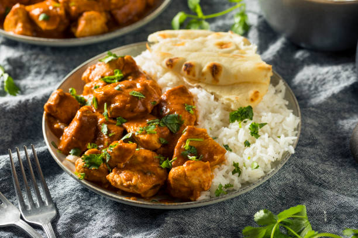

Chicken Tikka Masala
Back to the Recipes page.

Description
Chicken Tikka Masala is a delicious and filling curry and rice dish. It always hits the spot and is easily a favorite of mine.
Ingredients
- 1 and half lbs chicken (thighs or breasts).
- Half cup greek yogurt,
- A half to 1 teaspoon Kashmiri red chili powder.
- 1 teaspoon garam masala.
- A fourth teaspoon tumeric.
- 1 teaspoon coriander powder.
- A half teaspoon cumin powder.
- A half teaspoon salt.
- 1 tablespoon lemon juice.
- 1 tablespoon kasuri methi.
- 1 tablespoon ginger garlic paste (or three fourths grated ginger and garlic).
For the tikka masala
- 3 tablespoons oil (or ghee ).
- 1 and a half cups onions fine chopped.
- 1 green chili.
- 1 teaspoon salt.
- 1 tablespoon ginger garlic paste.
- A half to 1 teaspoon Kashmiri red chili powder.
- 2 teaspoons garam masala.
- 1 tablespoon coriander powder.
- 1 to 1 and half teaspoon cumin powder.
- 1 to 2 teaspoons sugar
- 1 lb tomatoes (pureed/chopped or 1 and a fourth cup tomato puree/passata or can peeled tomatoes).
- 1 cup water.
- Half tablespoon kasuri methi.
- Half cup heavy cream/whipping cream. (or cashew cream)
For Garnish
- 3 tablespoons heavy cream
- 3 tablespoons coriander leaves
Instructions
- Cube chicken into 1 inch pieces, then add them to a mixing bowl. Pat dry if needed you do not want excess moisture.
- Add red chilli powder, garam masala, cumin powder, coriander powder, turmeric, salt, lemon juice, oil, ginger garlic paste, yogurt, and kasuri methi.
- Mix up and then cover with cling wrap and refrigerate for 8-48 hours.
- Heat oil in a pot or pan and add onions and 1 teaspoon salt. Saute until golden or for 10 to 12 minutes.
- Add ginger garlic paste and saute for 1 minute
- Lower the heat to low and add the red chili powder, coriander powder, garam masala, and cumin powder. Stir quickly.
- Add tomatoes and cook on medium high for 7-8 minutes (2 minutes for tomato puree/passata).
- Add water and mix well, then bring to a boil and cover. Simmer for 12-14 minutes.
- While thats simmering put the chicken on metal skewers or soaked bamboo skewers and place them in a prepared tray. Bake for 460 F or 240 C for 9 to 10 minutes, flip cook for another 9-10 minutes.
- Once the tikka masala is done simmering add sugar and cream. Stir and cook for a few minutes until thick.
- Add the chicken and crushed kasuri methi, stir and cook for 2-3 minutes until chicken is soft and tender.
- Garnish and serve with rice or naan or what have you and enjoy!